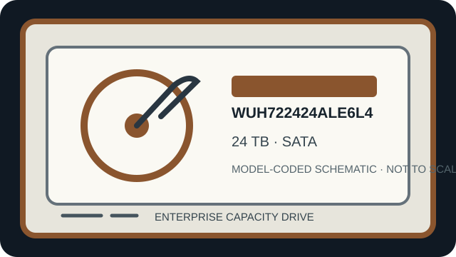

[ IDENTIFIED HDD // SKU-SPECIFIC RECORD ]
Western Digital Ultrastar DC HC580 WUH722424ALE6L4
24 TB; 3.5-inch; SATA 6 Gb/s. This SKU-specific record summarizes sector format, performance and workload ratings, recording technology, and host integration. Capacity, sector modes, firmware and security options vary by exact part number; verify the label and manufacturer documentation before deployment.

IDENTIFICATION: Confirm the full manufacturer model/SKU, firmware, security configuration and sector presentation from the drive label and host inquiry. Do not substitute a nearby capacity or suffix based only on family name or connector fit.
Recorded specifications
| Exact model / SKU | Western Digital Ultrastar DC HC580 WUH722424ALE6L4 |
|---|---|
| Capacity | 24 TB decimal, manufacturer-rated; formatted capacity is lower. |
| Form factor | 3.5-inch enterprise drive; check tray, carrier, height, mounting, airflow and acoustic/vibration constraints. |
| Interface | SATA 6 Gb/s; link speed negotiates with the host and does not imply support for every SATA feature. |
| Sector format (512e / 4Kn) | 512e for this ALE SKU (512-byte logical sectors on 4,096-byte physical sectors). The family can include other sector formats; do not infer 4Kn from a similar model code. |
| Rotation / cache | 7200 rpm; 512 MiB cache. |
| Recording technology | CMR; helium-sealed Ultrastar DC HC580 platform with OptiNAND. |
| Workload rating | 550 TB/year rated workload. This is an annualized workload ceiling, not a throughput or duty-cycle guarantee. |
| Reliability caveat | 2.5 million-hour projected MTBF and 0.35% AFR are statistical ratings; neither guarantees an individual drive lifetime or an array’s availability. |
| Host compatibility | Requires a SATA-capable port/backplane and suitable power; a SAS connector does not by itself establish SATA-device support. Confirm HBA/RAID firmware and qualification, 3.5-inch bay clearance, spin-up power, cooling, vibration handling, GPT/OS support above 2 TB and sector-mode alignment. Hardware RAID and expander behavior are system-specific. |
Workload and integration notes
- Use only with a documented SATA-compatible controller/backplane; verify controller support for this exact model, capacity, sector mode and drive firmware. A physical connector match is not proof of compatibility.
- For initial provisioning, check host-reported logical and physical sector sizes first. Ensure the operating system, HBA, RAID metadata, filesystem and recovery tools agree; changing sector presentation after writing data can make it inaccessible.
- Annual workload and population reliability ratings are not guarantees. Maintain independent backups, monitor SMART/vendor telemetry, and validate rebuild time, vibration, temperature, power cycling and write workload in the target enclosure.
- If a drive contains data and is failing, avoid formatting, writes, repeated power cycles or stress tests. Preserve exact label/SKU and firmware details and seek qualified recovery assistance when data matters.
Manufacturer sources
- Western Digital Ultrastar DC HC580 manufacturer product manualPrimary engineering reference for exact-model options, sector formats, interface and operating limits; check revision and model table.
- Western Digital Ultrastar DC HC580 data sheetOfficial manufacturer product-family information and specification context. Confirm exact SKU and available configuration in the linked documentation.
Specifications and ratings are manufacturer-family data and can vary by suffix, firmware, region or security configuration. Verify both primary sources and the actual label before procurement or use.